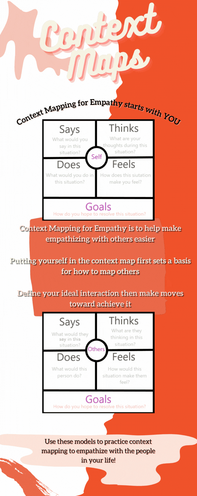

What is context mapping? How does one context map for empathy? To answer these questions, I did some research. Context mapping is a primary feature of human-centered design. People have local and contextual knowledge that is valuable to designers. To tap into this unique knowledge, context mapping is used as a form of contextual user research. This allows user experience and interface (UX/UI) designers to gain empathy for their users as well as gain inspirations from them. When presented with this knowledge I thought, “how can this be applied to the average individual/everyday life?” I wanted to bring context mapping outside of the world of UX/UI and human-centered design. Context mapping is a tool for observation and reflection. We as individuals should be granted this same access to the experiences, dreams, and needs of others. It was my goal for this project to expand the tool of context mapping for empathy beyond one field, an empower the individual to gain empathy themselves.
